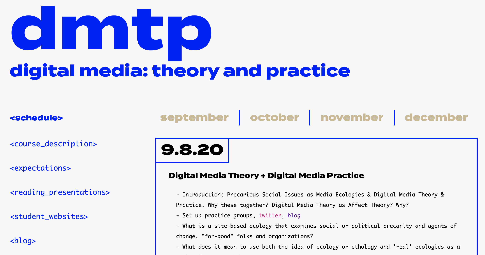

<website id="illustrator html/css js" date="may-december2020"/>

see the website >
This website serves students taking a Digital Media Theory and Practice course, and therefore had to be visually appealing (to inspire students for what they could do in the class) but extremely accessible and easily navigable. I co-designed the site and fully developed it.
The project is at its final stages of development.
Designed, prototyped and developed by me, this page will serve as an archive for digital work by students across the department. It includes a js-based filtering system that helps the user easily find a project based on a media type and course it belongs to.
A team effort of building a quick, well-designed, clean, and efficient Lab website that serves the entire MCC department. I have developed index, Visit Us and mediaWorks_ pages, and regularly maintain the entire site.